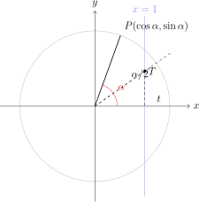

Hoofdstuk 4T-formules en formules van Simpson
Leerplandoelstellingen (GO! Navigator)
Gevorderde wiskunde (WD3_06.08)
-
• WD3_06.08.18 (MD 06.08.13) De leerlingen lossen eenvoudige veeltermvergelijkingen, rationale vergelijkingen, irrationale vergelijkingen, exponentiële vergelijkingen, logaritmische vergelijkingen en goniometrische vergelijkingen algebraı̈sch op.
-
– afbakening: deling van veeltermen
-
– afbakening: deling door \((x-a)\)
-
-
• WD3_06.08.22 (MD 06.08.23) De leerlingen gebruiken goniometrische formules om uitdrukkingen te vereenvoudigen.
-
– afbakening: formules: som- en verschilformules, verdubbelingsformules
-
Wat ga je leren?
-
• T-formules: schrijf \(\sin \alpha \), \(\cos \alpha \), \(\tan \alpha \) in functie van \(t=\tan \dfrac {\alpha }{2}\) en los vergelijkingen op via een kwadratische in \(t\).
-
• Formules van Simpson: zet sommen om naar producten en omgekeerd (handig om te vereenvoudigen en vergelijkingen op te lossen).
I T-formules (universele t-substitutie)
1 Stelling
We zetten
\[ \boxed {\ t=\tan \frac {\alpha }{2}\ }\qquad (\text {dus } \alpha =2\arctan t). \]
Dan gelden de t-formules
\[ \boxed {\ \sin \alpha =\frac {2t}{1+t^2}\ },\qquad \boxed {\ \cos \alpha =\frac {1-t^2}{1+t^2}\ },\qquad \boxed {\ \tan \alpha =\frac {2t}{1-t^2}\ }. \]
(Voorwaarden: \(1+t^2\neq 0\) (altijd waar) en \(1-t^2\neq 0\) voor \(\tan \alpha \).)
Voor \(\alpha =\pi +2k\pi \) bestaat \(t=\tan \frac {\alpha }{2}\) niet. Lossen we een vergelijking op met de t-formules, dan vinden we die hoeken dus nooit. Controleer ze daarom apart door ze in de oorspronkelijke vergelijking in te vullen.
2 Bewijs
Vertrek van de verdubbelingsformules met \(\alpha =2\theta \) en neem \(t=\tan \theta \):
\(\seteqnumber{0}{}{0}\)\begin{align*} \sin \alpha &=\sin (2\theta )\\ &=2\sin \theta \cos \theta \\ &=\frac {2\sin \theta \cos \theta }{\cos ^2\theta +\sin ^2\theta } && \aside {\text {want } \cos ^2\theta +\sin ^2\theta =1}\\ &=\frac {2\tan \theta }{1+\tan ^2\theta } && \aside {\text {teller en noemer delen door } \cos ^2\theta }\\ &=\frac {2t}{1+t^2},\\[1ex] \cos \alpha &=\cos (2\theta )\\ &=\cos ^2\theta -\sin ^2\theta \\ &=\frac {\cos ^2\theta -\sin ^2\theta }{\cos ^2\theta +\sin ^2\theta } && \aside {\text {want } \cos ^2\theta +\sin ^2\theta =1}\\ &=\frac {1-\tan ^2\theta }{1+\tan ^2\theta } && \aside {\text {teller en noemer delen door } \cos ^2\theta }\\ &=\frac {1-t^2}{1+t^2},\\[1ex] \tan \alpha &=\frac {\sin \alpha }{\cos \alpha }\\ &=\frac {2t}{1-t^2}. \end{align*} □
3 Omkering
Uit \(\sin \alpha =\dfrac {2t}{1+t^2}\) en \(\cos \alpha =\dfrac {1-t^2}{1+t^2}\) volgt ook
\[ \boxed {\ t=\frac {\sin \alpha }{1+\cos \alpha }=\frac {1-\cos \alpha }{\sin \alpha }\ }\quad (\sin \alpha \neq 0 \text { voor de tweede vorm}). \]
4 Toepassingen: vergelijkingen oplossen
Voorbeeld 1
Los op in \(\mathbb {R}\):
\[ \sin \alpha +\cos \alpha =\tfrac {3}{2}. \]
Schrijf in functie van \(t\):
\(\seteqnumber{0}{}{0}\)
\begin{align*}
&\sin \alpha +\cos \alpha =\frac {3}{2}\\ \iff {}&\frac {2t}{1+t^2}+\frac {1-t^2}{1+t^2}=\frac {3}{2}\\ \iff {}&\frac {1+2t-t^2}{1+t^2}=\frac {3}{2}\\ \iff
{}&2(1+2t-t^2)=3(1+t^2) && \aside {\text {kruisproduct}}\\ \iff {}&2+4t-2t^2=3+3t^2\\ \iff {}&5t^2-4t+1=0\\ \implies {}&t=\frac {4\pm \sqrt {16-20}}{10}=\frac {4\pm
\sqrt {-4}}{10}\ \lightning
\end{align*}
Geen reële oplossingen voor \(t\) \(\Rightarrow \) geen reële \(\alpha \).
(Controle: \(\sin \alpha +\cos \alpha \le \sqrt {2}<\tfrac {3}{2}\).)
Voorbeeld 2
Los op in \(\mathbb {R}\):
\[ \tan \alpha + \sec \alpha =2, \quad \sec \alpha =\frac {1}{\cos \alpha }. \]
In \(t\):
\[ \tan \alpha =\frac {2t}{1-t^2},\qquad \sec \alpha =\frac {1+t^2}{1-t^2}. \]
Beide breuken hebben de noemer \(1-t^2\), dus we eisen \(t\neq 1\) en \(t\neq -1\).
\(\seteqnumber{0}{}{0}\)\begin{align*} &\tan \alpha +\sec \alpha =2\\ \iff {}&\frac {2t}{1-t^2}+\frac {1+t^2}{1-t^2}=2\\ \iff {}&\frac {1+t^2+2t}{1-t^2}=2\\ \iff {}&1+t^2+2t=2-2t^2\\ \iff {}&3t^2+2t-1=0\\ \implies {}&t=\frac {-2\pm \sqrt {4+12}}{6}=\frac {-2\pm 4}{6}\\ \implies {}&t=\frac {1}{3}\quad \text {of}\quad t=-1\ \lightning \end{align*} De waarde \(t=-1\) valt weg, want ze maakt de noemer \(1-t^2\) nul. Voor \(t=-1\) is \(\alpha =-\frac {\pi }{2}+2k\pi \), en daar bestaan \(\tan \alpha \) en \(\sec \alpha \) niet.
Terug naar \(\alpha \) via \(t=\tan \dfrac {\alpha }{2}\):
\(\seteqnumber{0}{}{0}\)\begin{align*} &\tan \frac {\alpha }{2}=\frac {1}{3}\\ \implies {}&\frac {\alpha }{2}=\arctan \frac {1}{3}+k\pi \\ \implies {}&\boxed {\ \alpha =2\arctan \frac {1}{3}+2k\pi \ },\quad k\in \mathbb {Z} \end{align*} (Controle: \(\tan \alpha =\frac {3}{4}\) en \(\sec \alpha =\frac {5}{4}\), samen \(2\).)
Oefeningen
Oefening 1
Los op in \(\mathbb {R}\) met \(t=\tan \dfrac {\alpha }{2}\).
-
(a) \(\sin \alpha =\dfrac {3}{5}\)
\(\alpha =2\arctan 3+2k\pi \) of \(\alpha =2\arctan \frac {1}{3}+2k\pi \), \(k\in \mathbb {Z}\)
\(\seteqnumber{0}{}{0}\)\begin{align*} &\frac {2t}{1+t^2}=\frac {3}{5}\\ \iff {}&10t=3+3t^2\\ \iff {}&3t^2-10t+3=0\\ \implies {}&t=\frac {10\pm \sqrt {100-36}}{6}=\frac {10\pm 8}{6}\\ \implies {}&t=3\quad \text {of}\quad t=\frac {1}{3}\\ \implies {}&\alpha =2\arctan 3+2k\pi \\ \text {of}\quad {}&\alpha =2\arctan \frac {1}{3}+2k\pi ,\quad k\in \mathbb {Z} \end{align*} Voor \(\alpha =\pi +2k\pi \) is \(\sin \alpha =0\neq \frac {3}{5}\), dus daar komt niets bij.
-
(b) \(\cos \alpha -\sin \alpha =\dfrac {1}{2}\)
\(\alpha =2\arctan \frac {-2+\sqrt {7}}{3}+2k\pi \) of \(\alpha =2\arctan \frac {-2-\sqrt {7}}{3}+2k\pi \), \(k\in \mathbb {Z}\)
\(\seteqnumber{0}{}{0}\)\begin{align*} &\frac {1-t^2}{1+t^2}-\frac {2t}{1+t^2}=\frac {1}{2}\\ \iff {}&2(1-t^2-2t)=1+t^2\\ \iff {}&3t^2+4t-1=0\\ \implies {}&t=\frac {-4\pm \sqrt {16+12}}{6}=\frac {-4\pm 2\sqrt {7}}{6}=\frac {-2\pm \sqrt {7}}{3}\\ \implies {}&\alpha =2\arctan \frac {-2+\sqrt {7}}{3}+2k\pi \\ \text {of}\quad {}&\alpha =2\arctan \frac {-2-\sqrt {7}}{3}+2k\pi ,\quad k\in \mathbb {Z} \end{align*} Voor \(\alpha =\pi +2k\pi \) is \(\cos \alpha -\sin \alpha =-1\neq \frac {1}{2}\), dus daar komt niets bij.
-
(c) \(2\sin \alpha =\tan \alpha \)
\(\alpha =k\pi \) of \(\alpha =\pm \frac {\pi }{3}+2k\pi \), \(k\in \mathbb {Z}\) De noemer \(1-t^2\) van \(\tan \alpha \) eist \(t\neq 1\) en \(t\neq -1\).
\(\seteqnumber{0}{}{0}\)\begin{align*} &2\cdot \frac {2t}{1+t^2}=\frac {2t}{1-t^2}\\ \iff {}&4t(1-t^2)=2t(1+t^2)\\ \iff {}&6t^3-2t=0\\ \iff {}&2t(3t^2-1)=0\\ \iff {}&t=0\quad \text {of}\quad t=\pm \frac {\sqrt {3}}{3} \end{align*} Geen van die waarden is \(\pm 1\). Terug naar \(\alpha \):
\(\seteqnumber{0}{}{0}\)\begin{align*} \frac {\alpha }{2}&=k\pi & \text {of}\quad \frac {\alpha }{2}&=\pm \frac {\pi }{6}+k\pi \\ \Rightarrow \alpha &=2k\pi & \text {of}\quad \alpha &=\pm \frac {\pi }{3}+2k\pi \end{align*} Voor \(\alpha =\pi +2k\pi \) bestaat \(t\) niet, dus controleren we apart: \(2\sin \pi =0=\tan \pi \). Die hoeken zijn dus ook oplossingen. Samen met \(\alpha =2k\pi \) geeft dat
\[ \boxed {\ \alpha =k\pi \quad \text {of}\quad \alpha =\pm \frac {\pi }{3}+2k\pi ,\qquad k\in \mathbb {Z}\ }. \]
-
(d) \(\dfrac {1-\cos \alpha }{\sin \alpha }=\dfrac {1}{3}\)
\(\alpha =2\arctan \frac {1}{3}+2k\pi \), \(k\in \mathbb {Z}\) Volgens de omkering is het linkerlid precies \(t\) (met \(\sin \alpha \neq 0\)). Dus
\(\seteqnumber{0}{}{0}\)\begin{align*} &t=\frac {1}{3}\\ \implies {}&\alpha =2\arctan \frac {1}{3}+2k\pi ,\quad k\in \mathbb {Z} \end{align*} Daar is \(\sin \alpha =\dfrac {2t}{1+t^2}=\dfrac {3}{5}\neq 0\), dus de voorwaarde klopt. Voor \(\alpha =\pi +2k\pi \) is \(\sin \alpha =0\) en bestaat het linkerlid niet.
5 Oefeningen
Zie handboek VBTL Analyse 1b, hoofdstuk 3.4, p 143 voor de \(t\)-formules. Het handboek heeft in hoofdstuk 3 geen oefeningen die enkel de \(t\)-formules vragen. Los wel nr 4 h op p 192 op met de \(t\)-formules.
II Formules van Simpson
1 Opstellen van de formules
We vertrekken van de optellingsformules:
\(\seteqnumber{0}{}{0}\)\begin{align*} \sin (\alpha +\beta ) &= \sin \alpha \cos \beta +\cos \alpha \sin \beta \tag {1}\\ \sin (\alpha -\beta ) &= \sin \alpha \cos \beta -\cos \alpha \sin \beta \tag {2}\\ \cos (\alpha +\beta ) &= \cos \alpha \cos \beta -\sin \alpha \sin \beta \tag {3}\\ \cos (\alpha -\beta ) &= \cos \alpha \cos \beta +\sin \alpha \sin \beta \tag {4} \end{align*}
\(\seteqnumber{0}{}{0}\)\begin{align*} (1)+(2)\quad &\Rightarrow \sin (\alpha +\beta )+\sin (\alpha -\beta )=2\sin \alpha \cos \beta \\ &\text {Stel hierin}\quad \begin{cases}\alpha +\beta =p\\ \alpha -\beta =q\end {cases} \iff \begin{cases}2\alpha =p+q\\ 2\beta =p-q\end {cases} \iff \begin{cases}\alpha =\dfrac {p+q}{2}\\[1ex] \beta =\dfrac {p-q}{2}\end {cases}\\ &\Rightarrow \sin p+\sin q=2\sin \frac {p+q}{2}\cos \frac {p-q}{2}\\[2ex] (1)-(2)\quad &\Rightarrow \sin (\alpha +\beta )-\sin (\alpha -\beta )=2\cos \alpha \sin \beta \\ &\text {zelfde substitutie}\\ &\Rightarrow \sin p-\sin q=2\cos \frac {p+q}{2}\sin \frac {p-q}{2}\\[2ex] (3)+(4)\quad &\Rightarrow \cos (\alpha +\beta )+\cos (\alpha -\beta )=2\cos \alpha \cos \beta \\ &\Rightarrow \cos p+\cos q=2\cos \frac {p+q}{2}\cos \frac {p-q}{2}\\[2ex] (3)-(4)\quad &\Rightarrow \cos (\alpha +\beta )-\cos (\alpha -\beta )=-2\sin \alpha \sin \beta \\ &\Rightarrow \cos p-\cos q=-2\sin \frac {p+q}{2}\sin \frac {p-q}{2} \end{align*}
2 Besluit
Eerste vorm: product \(\to \) som
\[ \boxed { \begin {aligned} 2\sin \alpha \cos \beta &= \sin (\alpha +\beta )+\sin (\alpha -\beta )\\ 2\cos \alpha \sin \beta &= \sin (\alpha +\beta )-\sin (\alpha -\beta )\\ 2\cos \alpha \cos \beta &= \cos (\alpha +\beta )+\cos (\alpha -\beta )\\ 2\sin \alpha \sin \beta &= \cos (\alpha -\beta )-\cos (\alpha +\beta ) \end {aligned}} \]
Tweede vorm: som \(\to \) product
\[ \boxed { \begin {aligned} \sin p+\sin q &= 2\sin \frac {p+q}{2}\cos \frac {p-q}{2}\\ \sin p-\sin q &= 2\cos \frac {p+q}{2}\sin \frac {p-q}{2}\\ \cos p+\cos q &= 2\cos \frac {p+q}{2}\cos \frac {p-q}{2}\\ \cos p-\cos q &= -2\sin \frac {p+q}{2}\sin \frac {p-q}{2} \end {aligned}} \]
3 Toepassingen
Exacte waarden en vereenvoudigen
Voorbeeld 1. Bereken \(\sin 20^\circ +\sin 40^\circ \).
\[ \sin 20^\circ +\sin 40^\circ =2\sin 30^\circ \cos 10^\circ =2\cdot \tfrac 12\cdot \cos 10^\circ =\boxed {\ \cos 10^\circ \ }. \]
Voorbeeld 2. Herschrijf \(\sin x+\sin 3x\) als product en los \(\sin x+\sin 3x=0\) op.
\[ \sin x+\sin 3x =2\sin \frac {4x}{2}\cos \frac {-2x}{2} =2\sin (2x)\cos (-x) =2\sin (2x)\cos x. \]
Vergelijking \(2\sin (2x)\cos x=0\):
\[ \sin (2x)=0\ \text { of }\ \cos x=0. \]
Dus \(2x=k\pi \) of \(x=\dfrac {\pi }{2}+k\pi \):
\[ \boxed {\ x=\frac {k\pi }{2}\quad (k\in \mathbb {Z})\ }. \]
(Opmerking: dit omvat beide reeksen oplossingen.)
Integraalvoorbereiding (algebraı̈sch)
Zet \(\sin ^2 x\) om naar een som:
\[ \sin ^2x=\tfrac 12(1-\cos 2x),\quad \cos ^2x=\tfrac 12(1+\cos 2x) \]
(dit zijn de halveringsformules; nuttig voor gemiddelden en integralen).
Oefeningen
Oefening 2
Gebruik telkens de formules van Simpson.
-
(a) Schrijf \(\cos 7x-\cos 5x\) als product.
\(\cos 7x-\cos 5x=-2\sin 6x\sin x\)
\(\seteqnumber{0}{}{0}\)\begin{align*} \cos 7x-\cos 5x &=-2\sin \frac {7x+5x}{2}\sin \frac {7x-5x}{2}\\ &=-2\sin 6x\sin x \end{align*}
-
(b) Vereenvoudig \(\sin 5x\cos 3x+\sin 3x\cos 5x\).
\(\sin 8x\)
\(\seteqnumber{0}{}{0}\)\begin{align*} \sin 5x\cos 3x+\sin 3x\cos 5x &=\tfrac 12\bigl [\sin 8x+\sin 2x\bigr ]+\tfrac 12\bigl [\sin 8x+\sin (-2x)\bigr ]\\ &=\tfrac 12\bigl [\sin 8x+\sin 2x\bigr ]+\tfrac 12\bigl [\sin 8x-\sin 2x\bigr ]\\ &=\sin 8x \end{align*} Dit is ook de somformule \(\sin (5x+3x)\).
-
(c) Los op: \(\cos x+\cos 3x=\cos 2x\).
\(x=\frac {\pi }{4}+k\frac {\pi }{2}\) of \(x=\pm \frac {\pi }{3}+2k\pi \), \(k\in \mathbb {Z}\)
\(\seteqnumber{0}{}{0}\)\begin{align*} &\cos x+\cos 3x=\cos 2x\\ \iff {}&2\cos \frac {x+3x}{2}\cos \frac {x-3x}{2}=\cos 2x\\ \iff {}&2\cos 2x\cos x=\cos 2x && \aside {\cos (-x)=\cos x}\\ \iff {}&\cos 2x\,(2\cos x-1)=0 && \aside {\text {niet delen door } \cos 2x}\\ \iff {}&\cos 2x=0\quad \text {of}\quad \cos x=\frac {1}{2} \end{align*}
\(\seteqnumber{0}{}{0}\)\begin{align*} 2x&=\frac {\pi }{2}+k\pi & \text {of}\quad x&=\pm \frac {\pi }{3}+2k\pi ,\quad k\in \mathbb {Z}\\ \implies x&=\frac {\pi }{4}+k\frac {\pi }{2} \end{align*}
-
(d) Toon aan: \(\sin A\sin B+\cos A\cos B=\cos (A-B)\).
\(\seteqnumber{0}{}{0}\)\begin{align*} \sin A\sin B+\cos A\cos B &=\tfrac 12\bigl [\cos (A-B)-\cos (A+B)\bigr ]\\ &\quad +\tfrac 12\bigl [\cos (A-B)+\cos (A+B)\bigr ]\\ &=\cos (A-B). \end{align*}
4 Oefeningen
Zie handboek VBTL Analyse 1b, hoofdstuk 3.4, Oefeningen (p 148 en p 149).
-
• Som omzetten in product: p 148 nr 1 en 2.
-
• Vereenvoudigen: p 148 nr 3.
-
• Identiteiten bewijzen: p 148 nr 4.
-
• Product omzetten in som: p 148 nr 5.
-
• Exacte waarden zonder rekenmachine: p 149 nr 6.
-
• Bewijzen in een driehoek (nr 8 in een vierhoek): p 149 nr 7 tot 11.
-
• Vragen uit de toenmalige toelatingsexamens burgerlijk ingenieur: p 149 nr 12 en 13.
III Combineren: t-formules en Simpson
Voorbeeld 3
Los op in \(\mathbb {R}\):
\[ \sin \alpha +\sin 3\alpha =\tfrac {3}{2}. \]
Stap 1 (Simpson). \(\sin \alpha +\sin 3\alpha =2\sin (2\alpha )\cos \alpha \).
\[ 2\sin (2\alpha )\cos \alpha =\tfrac {3}{2}. \]
Stap 2 (t-formules). Neem \(t=\tan \dfrac {\alpha }{2}\):
\[ \sin (2\alpha )=\frac {4t(1-t^2)}{(1+t^2)^2},\qquad \cos \alpha =\frac {1-t^2}{1+t^2}. \]
Dus
\[ 2\cdot \frac {4t(1-t^2)}{(1+t^2)^2}\cdot \frac {1-t^2}{1+t^2} =\frac {8t(1-t^2)^2}{(1+t^2)^3} =\frac {3}{2}. \]
Kruisproduct:
\[ 16t(1-t^2)^2=3(1+t^2)^3. \]
Dit geeft een (reële) vergelijking van graad \(3\) in \(t\). Werk uit of gebruik CAS om wortels te vinden; hou enkel die \(t\) waarvoor de bijhorende \(\alpha =2\arctan t\) aan de beginvoorwaarde voldoet (en vermijd \(\cos \alpha =0\) bij terugrekenen).
Oefening (uitwerking op apart blad).
Los exact op: \(\sin 2x+\sin 4x=1\).
(Hint: Simpson \(\Rightarrow \) product van \(\sin 3x\) en \(\cos x\); daarna t-formules of herschrijven met \(\sin 3x=3\sin x-4\sin ^3x\).)
Overzicht op één blik
\[ \boxed { \begin {aligned} t&=\tan \frac {\alpha }{2},\\[0.2em] \sin \alpha &=\frac {2t}{1+t^2},\quad \cos \alpha =\frac {1-t^2}{1+t^2},\quad \tan \alpha =\frac {2t}{1-t^2}. \end {aligned}} \qquad \boxed { \begin {aligned} \sin p\pm \sin q&=2\sin \frac {p\pm q}{2}\cos \frac {p\mp q}{2},\\ \cos p+\cos q&=2\cos \frac {p+q}{2}\cos \frac {p-q}{2},\\ \cos p-\cos q&=-2\sin \frac {p+q}{2}\sin \frac {p-q}{2}. \end {aligned}} \]
Extra oefenset
-
1. Zet om naar één sinus of cosinus met Simpson:
\[ \sin 15^\circ +\sin 75^\circ ,\quad \cos 50^\circ -\cos 10^\circ . \]
-
2. Herschrijf als som:
\[ \sin 4x\cos x,\qquad \cos 2x\cos 5x. \]
-
3. Los op in \(\mathbb {R}\):
\[ \sin x+\cos x=1,\qquad \cos x+\cos 3x=0. \]
-
4. Gebruik \(t=\tan \dfrac {x}{2}\):
\[ 2\cos x=\tan x,\qquad \frac {1-\cos x}{\sin x}=\frac {1}{2}. \]
Appendix: Geometrische gids voor \(t=\tan \dfrac {\alpha }{2}\)

Op de raaklijn \(x=1\) aan de eenheidscirkel is \(t\) precies de georiënteerde \(y\)-coördinaat van het snijpunt \(T\) van de halve-hoekstraal met die raaklijn. Hieruit kunnen de t-formules ook zuiver geometrisch afgeleid worden.